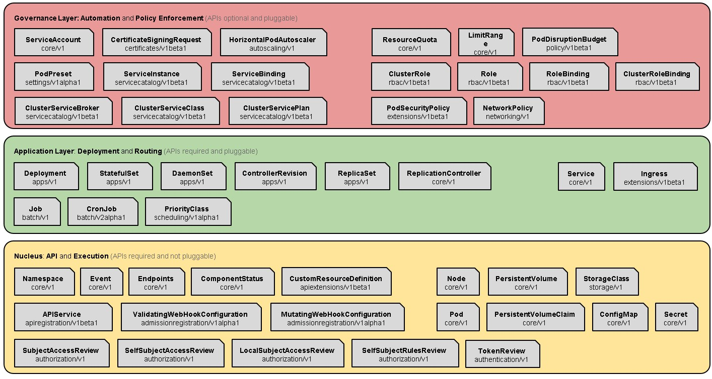

General goal
Dubbo's provider don't care about service registration.Open its Dubbo service port,the declaration and publishment of the service will be executed by Kubernetes. Dubbo's consumer directly discovers the corresponding service endpoints of Kubernetes during service discovery procedure, thereby reusing Dubbo's existing microservice channel capabilities.The benefit is that there is no need to rely on any third-party soft-loaded registry and it can be seamlessly integrated into the multi-tenant security system of Kubernetes. Reference demo : https://github.com/dubbo/dubbo-ubernetes
Introduction
Kubernates is a hierarchical system with rich secondary development function based on the expansibility.
- First of all, Kubernates's core function is to manage the container cluster. Kubernates manages the storage and calculation of containerized cluster, based on the container runtime (CRI), network interface (CNI) and storage service interface (CSI/FV).
- Secondly，Kubernates has application-oriented deployment and routing capabilities，including statefulness/statelessness，batch processing and service-oriented applications，especially the application management based on microservices architecture which includes service discovery，service definition and unified configuration on the basis of configmap.
- Finally, on top of the abstract model of the basic resource (mainly the resources of abstract infrastructure, IaaS) and the application layer is the governance layer, which includes elastic expansion, namespaces/tenants and so on. Naturally, it is a matter of course to set up service about unified log center and omnidirectional monitoring on the Kubernetes based upon the foundational capabilities of atomic inner core.
We will explain the above description with a diagram of Kubernetes Architecture. In 2018, Kubernetes took a qualitative step toward the standard PaaS basement.Someone hold opinions that the reason is the ability for secondary development on the basis of the expansion and someone think the key is declarative programming and strong community operations relying on Google and Redhat. However,I think the essential reason is Layered architecture and the abstract domain modeling in the problem domain as the figure below.

From a micro-service architecture perspective, Kubernetes is a micro-service framework (more appropriate than a micro-service platform or toolkit set at this time) in a sense, supporting the basic capabilities of microservices for service discovery/registration. Use the following table to make a brief description.
| The design of microservice | The function of Kubernetes |
|---|---|
| Point 1：API gateway | Ingress |
| Point 2：Statelessness, distinguish between stateful and stateless applications | Stateless corresponds to Deployment，and stateful corresponds to StatefulSet |
| Point 3：Horizontal expansion of the database | Headless service points to PaaS service or StatefulSet deployment |
| Point 4：Cache | Headless service points to PaaS service or StatefulSet deployment |
| Point 5：Service splitting and service discovery | Service |
| Point 6：Service orchestration and flexibility | Replicas of deployment |
| Point 7：Unified configuration center | ConfigMap |
| Point 8：Unified log center | DaemonSet deploys log agent |
| Point 9：Circut break, current limiting and downgrade | Service Mesh |
| Point 10：Comprehensive monitoring | Cadsivor, DaemonSet deploys and monitors Agent |
By the way, the microservices field involves many issues, which can be explained as follows. When building microservices, we will delve into Distributed System, a discipline has a 40-year research background and is rooted in the adaptive system theory. It's a bit complicated, but the concepts it covers are more or less heard for us, and it solves problems that we're familiar with:
- Deployment
- Delivery
- APIs
- Versioning
- Contracts
- Scaling / Autoscaling
- Service Discovery
- Load Balancing
- Routing / Adaptive Routing
- Health Checking
- Configuration
- Circuit Breaking
- Bulk-heads
- TTL / Deadlining
- Latency Tracing
- Service Causal Tracing
- Distributed logging
- Metrics Exposure, Collection
For Kubernetes, only a few of problems are solved. Problems such as Dynamic Routing, Stability Control (Circuit Breaking, Bulk-heads, etc.) , Distributed Service Tracking, etc. are all the blank. These problems are exactly what Service Mesh needs to solve, and these also plays an important role in CNCF's Tail Map. Of course, as Dubbo is a basically complete microservices infrastructure (Dubbo is based on the Sidecar which is a common solution for solving cross-language claims in Service Mesh, and the details of Dubbo are so complicated that they need to be explained in the new topic ) , that is to say, it is very meaningful to integrate Dubbo into the k8s system. The original definition of Service Mesh is cited below:
A service mesh is a dedicated infrastructure layer for handling service-to-service communication. It's responsible for the reliable delivery of requests through the complex topology of services that comprise a modern, cloud native application.
We will know the existing solution, Dubbo integrates the Clould Native Equipment - Kubernetes's basic abilities to solve the microservices's core problems, can be regarded as a Service Mesh solution in a narrow sense, but it can only be used in the Java field. You can understand the above words as a joke, haha.
Thought/Plan
Kubernetes is a natural address registration center for microservices, similar to zookeeper, VIPserver and Configserver used internally by Alibaba. Specifically, the Pod in Kubernetes is a running instance of the application. The scheduled deployment/start/stop of the Pod will call the API-Server service to maintain its state to ETCD. The service in Kubernetes is coresponded to the concept of the microservices defined as follows.
A Kubernetes Service is an abstraction layer which defines a logical set of Pods and enables external traffic exposure, load balancing and service discovery for those Pods.
In conclusion, the Kubernetes service has the following characteristics:
- Each Service has a unique name and corresponding IP. IP is automatically assigned by Kubernetes and the name is defined by the developer.
- Service IP has several manifestations: ClusterIP, NodePort, LoadBalance and Ingress. ClusterIP is mainly used for intra-cluster communication; NodePort, Ingress and LoadBalance, which are used to expose services to access portals outside the cluster.
At first sight, the service of Kubernetes has its own IP, while under the original fixed mindset: Dubbo/HSF service is aggregated by the IP of the entire service cluster, that means, Kubernetes and Dubbo/HSF look like something different in natural, but when carefully thinking, the difference becomes insignificant. Because the only IP under Kubernetes is just a Virtural IP--VIP, behind the vip are multiple endpoints, which is the factual processing node.
Here we only discuss the situation that the Dubbo service in the cluster is accessed in the same Kubernetes cluster, As for the provider outside Kubernetes to access the provider in Kubernetes, since it involves the problem of network address space, and it usually requires GateWay/loadbalance for mapping conversion, which there not detail discussion for this case. Besides, there are two options available for Kubernetes:
-
DNS: The default Kubernetes service is based on the DNS plugin (The latest version of the recommendation is coreDNS), one proposal on Dubbo is about this. since HSF/Dubbo has always highlighted its soft-load address discovery capability, it ignores Static's strategy insteadily, my understanding is that as a service discovery mechanism, the static resolution mechanism is one of the simplest and most needed to support mechanism, you can also refer to Envoy's point of views. While at the same time, ant's SOFA has always supported this static strategy, it can provides an explanation for an engineering fragment of the SOFA project. There are two advantages to doing this. 1) When the soft load center crash is unavailable and the address list cannot be obtained, there is a mechanism to Failover to this policy to handle certain requests. 2) Under LDC/unitization, the ant's load center cluster is deployed in the equipment room/area. First, the LDC of the soft load center is guaranteed to be stable and controllable. When the unit needs the request center, the address of the VIP can come in handy.

-
API：DNS relies on the DNS plugin, which will generate additional operation, so consider directly obtaining the endpoint through the client of Kubernetes. In fact, by accessing the API server interface of Kubernetes, you can directly obtain the list of endpoints behind a certain servie, and can also monitor the changes in its address list. Thereby implementing the soft load discovery strategy recommended by Dubbo/HSF. Refer to the code for details:
The above two thoughts need to consider the following two points:
- Kubernetes and Dubbo are consistent with the mapping name of service. Dubbo's service is determined by serviename, group, version to determine its uniqueness, and servicename generally has a longer package name for its service interface. Need to map the servie name of Kubernetes and the service name of dubbo. Either add a property like SOFA to define it. This is a big change, but it is most reasonable. Or it is a fixed rule to reference the deployed environment variables, which can be used for quick verification.
- Port problem:The default Pod and Pod network interoperability is solved, need to be validated.
Demo Verification
The following is a demo deployment through Kubernetes service in Alibaba Cloud's Container Registry and EDAS. Visit Alibaba Cloud -》Container Registry.
- Create repo and bind the github codebase. As shown below.

-
Click Manage enter the repository details page. Click Build in images service panel, construct the demo into image and publish it to the specified repository. As shown below.

-
Switch to Enterprise Distributed Application Services (EDAS) products panel, visit Resource Management -> Clusters. Create Kubernetes cluster and bind ECS. As shown below.

-
Application Management -> Create application, type Kubernetes application and specify the image in the container registry . As shown below.


-
After creation , then deploy applications. As shown below.

-
The supplementary application name cannot have uppercase letters, all lowercase, otherwise there is a problem of deployment failure.
-
When creating an app, after selecting the image, the next button cannot be clicked and you need to click Choose to continue.
-
EDAS has two independent Kubernetes services, one based on Alibaba Cloud's container service, and one set by Lark. I experience the latter.
-
The development joint of Docker and IDE integration, you need to consider the relevant plug-ins for integrating IDEA.
-
There is always an error in deployment, maybe there is a problem with the Kubernetes service. Need further investigation.
{"kind":"Pod","namespace":"lzumwsrddf831iwarhehd14zh2-default","name":"dubbo-k8s-demo-610694273-jq238","uid":"12892e67-8bc8-11e8-b96a-00163e02c37b","apiVersion":"v1","resourceVersion":"850282769"},"reason":"FailedSync","message":"Error syncing pod","